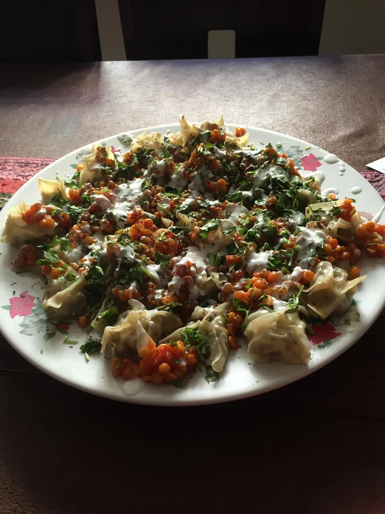

Afghan mantu is perhaps the most popular dish from Afghanistan. It is a meat (Beef/Lamb) stuffed dumpling that is steamed in a multilayer steamer. Mantu is served on special occasions and large gatherings. In Afghanistan, cooked mantu is often sold at markets and busy streets much like hotdog stands. Mantu can be served as a main dish or a side dish.
Heat pan over a medium heat and add garlic, ground beef and salt and coriander. Cook until the meat is half-way cooked for about 15 to 20 minutes.
Add black pepper and remove from heat.
Combine one cup of raw chopped onions to the meat and let it cool down to room temperature
Soak split peas for 2–3 hours or overnight.
Heat oil in a frying pan and cook onion and garlic until lightly browned.
Add tomato and tomato paste. Add split peas and ¾ cup water and cook for 30–45 minutes until soft.
Season with salt and pepper and set aside.
Combine all of the ingredients for dip in a bowl and mix well.
Place flour in a large mixing bowl and gradually add water, mixing with hands until it becomes doughy.
Leave the dough to settle for 15–20 minutes or until it becomes firm.
Separate dough into small handfuls and roll into individual ball shapes.
Scatter some flour on the bench surface and using a small rolling pin, roll the balls into circular shapes.
Roll the dough ball into a very thin (1/16-inch) strips using a pasta machine. Cut the strips into 2-inch squares.
Place approximately one tablespoon of the cooled ground beef and onion mixture onto each wrap. To make the wraps stick together easily, wet the edges with water (you may use your fingers or a basting brush).
Fold over first two opposite ends of the egg roll wrap and followed by other two ends to enclose dumplings. Press the edges tightly to seal together. Continue with the remaining wraps.
Take the racks out of the steamer dish. Add water to the dish, cover and bring to boil.
Oil the base of steamer to prevent sticking and place dumplings carefully across oil.
Cover lid and cook for approximately 40 minutes.
When the dumplings have cooked, add a thin layer of the yogurt mixture to a large serving plate. Place the steamed dumplings on top.
Pour some more of the yogurt mixture on top of the dumplings and coat everything with the the topping sauce.
Garnish with dried mint, frish and chopped coriander and a little bit of cayenne pepper.
Have a good taste.